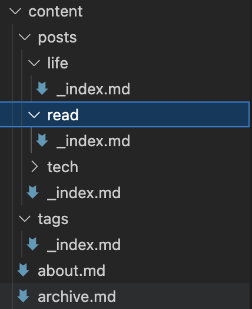
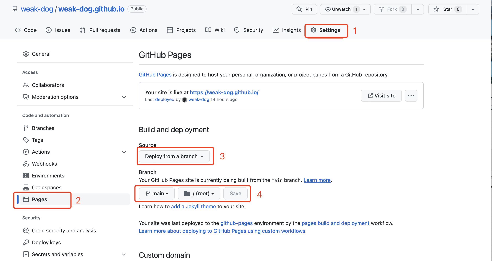

1. 安装hugo#
mac用户推荐使用HomeBrew工具安装，执行命令brew install hugo进行安装。
执行hugo version检查是否安装成功，若出现版本信息则安装成功。
2. 新建站点#
终端进入想要存放网站文件夹的地址，执行hugo new site yoursite，就会在当前文件夹内出现网站目录结构。其中的配置文件为toml格式，如果想要yml格式的配置文件可以执行hugo new site yoursite -f yml。
网站目录如下
1
2
3
4
5
6
7
8
9
|
+------------
│ config.toml
├─archetypes
│ default.md
├─content #
├─data
├─layouts
├─static
└─themes
|
3. 更换主题#
在hugo官网hugo主题官网上寻找好看的主题，点击会跳转到主题对应的github仓库，将主题下载并放在网站目录的themes文件夹下，在配置文件中添加theme: "yourtheme"属性指定主题名称。
我选择的是PaperMod主题，config.yml参照了Sulv的网站内容编写（复制）。
Config.yml
1
2
3
4
5
6
7
8
9
10
11
12
13
14
15
16
17
18
19
20
21
22
23
24
25
26
27
28
29
30
31
32
33
34
35
36
37
38
39
40
41
42
43
44
45
46
47
48
49
50
51
52
53
54
55
56
57
58
59
60
61
62
63
64
65
66
67
68
69
70
71
72
73
74
75
76
77
78
79
80
81
82
83
84
85
86
87
88
89
90
91
92
93
94
95
96
97
98
99
100
101
102
103
104
105
106
107
108
109
110
111
112
113
114
115
116
117
118
119
120
121
122
123
124
125
126
127
128
129
130
131
132
133
134
135
136
137
138
139
140
141
142
143
144
145
146
147
148
149
150
151
152
153
154
155
156
157
158
159
160
161
162
163
164
165
166
167
168
169
170
171
172
173
174
175
176
177
178
179
180
181
182
183
184
185
186
187
188
189
190
191
192
193
194
195
196
197
198
|
baseURL: https://weak-dog.github.io
languageCode: zh-cn # en-us
title: "Weakdog's Blog"
theme: "PaperMod" # 主题名字，和themes文件夹下的一致
enableInlineShortcodes: true #允许内联短码
enableEmoji: true # 允许使用 Emoji 表情，建议 true
enableRobotsTXT: true # 允许爬虫抓取到搜索引擎，建议 true
hasCJKLanguage: true # 自动检测是否包含 中文日文韩文 如果文章中使用了很多中文引号的话可以开启
buildDrafts: false
buildFuture: false
buildExpired: false
#googleAnalytics: UA-123-45 # 谷歌统计
paginate: 15 # 每页显示的文章数
summaryLength: 20 # 文章概览的自字数，默认70
minify:
disableXML: true
# minifyOutput: true
permalinks: #浏览器链接显示方式
post: "/:title/"
# post: "/:year/:month/:day/:title/"
defaultContentLanguage: en # 最顶部首先展示的语言页面
defaultContentLanguageInSubdir: true
languages:
en:
languageName: "English"
# contentDir: content/english
weight: 1
profileMode:
enabled: true
title: (〃'▽'〃)
subtitle: "👏🏼欢迎光临维克道格的博客"
imageUrl: "img/test.jpeg" #图片放在static/img/Q.gif
imageTitle:
imageWidth: 150
imageHeight: 150
buttons:
- name: 👨🏻💻技术
url: posts/tech
- name: 📕阅读
url: posts/read
- name: 🏖生活
url: posts/life
menu:
main:
- identifier: home
name: 🏠主页
url: /
weight: 1
- identifier: posts
name: 📚文章
url: posts
weight: 2
- identifier: archives
name: ⏱时间轴
url: archives/
weight: 3
- identifier: tags
name: 🔖标签
url: tags
weight: 4
- identifier: about
name: 🙋🏻♂️关于
url: about
weight: 5
outputs:
home:
- HTML
- RSS
- JSON
params:
env: production # to enable google analytics, opengraph, twitter-cards and schema.
# description: "这是一个纯粹的博客......"
author: weakdog
# author: ["Me", "You"] # multiple authors
defaultTheme: auto # defaultTheme: light or dark
disableThemeToggle: false
DateFormat: "2006-01-02"
ShowShareButtons: true
ShowReadingTime: true
# disableSpecialistPost: true
displayFullLangName: true
ShowPostNavLinks: true
ShowBreadCrumbs: true
ShowCodeCopyButtons: true
hideFooter: false # 隐藏页脚
ShowWordCounts: true
VisitCount: true
ShowLastMod: true #显示文章更新时间
ShowToc: true # 显示目录
TocOpen: true # 自动展开目录
comments: true
socialIcons:
- name: github
url: "https://github.com/weak-dog"
- name: email
url: "mailto:2562258990@qq.com"
# editPost:
# URL: "https://github.com/adityatelange/hugo-PaperMod/tree/exampleSite/content"
# Text: "Suggest Changes" # edit text
# appendFilePath: true # to append file path to Edit link
label: #左上角图标
text: "Weakdog's Blog"
icon: "img/test.jpeg"
iconHeight: 35
# analytics: #谷歌分析
# google:
# SiteVerificationTag: "XYZabc"
assets:
favicon: "img/test.jpeg"
favicon16x16: "img/test.jpeg"
favicon32x32: "img/test.jpeg"
apple_touch_icon: "test.jpeg"
safari_pinned_tab: "test.jpeg"
cover:
hidden: false # hide everywhere but not in structured data
hiddenInList: false # hide on list pages and home
hiddenInSingle: false # hide on single page
fuseOpts: #搜索配置
isCaseSensitive: false
shouldSort: true
location: 0
distance: 1000
threshold: 1
minMatchCharLength: 0
keys: ["title", "permalink", "summary"]
twikoo:
version: 1.4.11
taxonomies:
category: categories
tag: tags
series: series
markup:
goldmark:
renderer:
unsafe: true # HUGO 默认转义 Markdown 文件中的 HTML 代码，如需开启的话
highlight:
# anchorLineNos: true
codeFences: true
guessSyntax: true
lineNos: true
# noClasses: false
# style: monokai
style: darcula
# codeFences：代码围栏功能，这个功能一般都要设为 true 的，不然很难看，就是干巴巴的-代码文字，没有颜色。
# guessSyntax：猜测语法，这个功能建议设置为 true, 如果你没有设置要显示的语言则会自动匹配。
# hl_Lines：高亮的行号，一般这个不设置，因为每个代码块我们可能希望让高亮的地方不一样。
# lineNoStart：行号从编号几开始，一般从 1 开始。
# lineNos：是否显示行号，我比较喜欢显示，所以我设置的为 true.
# lineNumbersInTable：使用表来格式化行号和代码,而不是 标签。这个属性一般设置为 true.
# noClasses：使用 class 标签，而不是内嵌的内联样式
privacy:
vimeo:
disabled: false
simple: true
twitter:
disabled: false
enableDNT: true
simple: true
instagram:
disabled: false
simple: true
youtube:
disabled: false
privacyEnhanced: true
services:
instagram:
disableInlineCSS: true
twitter:
disableInlineCSS: true
|
编辑archetypes文件夹下的default.md来修改文章模板，没有的话就创建一个。
1
2
3
4
5
6
7
8
9
10
11
12
13
14
15
16
17
18
19
20
21
22
23
24
25
26
27
|
---
title: "{{ replace .Name "-" " " | title }}" #标题
date: {{ .Date }} #创建时间
lastmod: {{ .Date }} #更新时间
author: ["weakdog"] #作者
categories:
- 分类1
- 分类2
tags:
- 标签1
- 标签2
description: "" #描述
weight: # 输入1可以顶置文章，用来给文章展示排序，不填就默认按时间排序
slug: ""
draft: false # 是否为草稿
comments: true #是否展示评论
showToc: true # 显示目录
TocOpen: true # 自动展开目录
hidemeta: false # 是否隐藏文章的元信息，如发布日期、作者等
disableShare: true # 底部不显示分享栏
showbreadcrumbs: true #顶部显示当前路径
cover:
image: "" #图片路径：posts/tech/文章1/picture.png
caption: "" #图片底部描述
alt: ""
relative: false
---
|
4. 目录设置#
按照需求在content文件夹下新建一些目录文件夹，用来存储不同类别的文章。在每个文件夹内添加一个_index.md文件，用来设置目录的标题和展示样式。

例如posts下的_index.md：
1
2
3
4
|
---
title: "📚文章"
hidemeta: true #
---
|
posts/tech下的_index.md：
1
2
3
4
|
---
title: "👨🏻💻技术"
hidemeta: true
---
|
5. 启动网站#
终端进入网站目录，执行hugo server -D就可以在本地启动网站，预览地址为localhost:1313。
执行hugo生成文件夹public，里面包含生成的静态网页文件，这个文件夹可以部署到云服务器或者托管到github上。
推荐使用hugo -F --cleanDestinationDir命令生成静态网页，因为hugo命令只会往public文件夹里添加新内容，而不会删除冗余内容，而-F命令则会覆盖原来的public文件夹而生成一个全新的public。
6. 写文章#
所有的文章被放在content目录下。如果没有定义别的分类目录的话执行hugo new article.md即可在content目录下生成article.md文件。如果自定义了分类目录，比如我想要在content/posts/tech文件夹里新建文章，则执行hugo new posts/tech/article.md命令，这样文章就会生成到指定目录。
如果需要在文章里插入图片，则需要在文章所属的文件夹内创建一个与文章同名的文件夹，将需要插入的picture.png图片放进去，在md文件里使用命令调用。

7. 将网站部署在github page上#
在github上创建yourname.github.io公共仓库，将public文件夹里的内容push上去。在settings里按照如图配置即可。

输入yourname.github.io即可访问网站。
8. 一些关键命令#